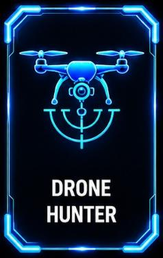

Airspace Security / FSI-DH-02
Drone Hunter

ANTI-UAV DEFENSE
Drone Hunter Tactical Scanner
RF detection and direction-finding technology designed to provide early warning of unauthorized unmanned aerial systems.
Detection radius: Up to 3-5 KM
Frequency coverage: Multi-band RF detection
Application: Perimeter and airspace monitoring